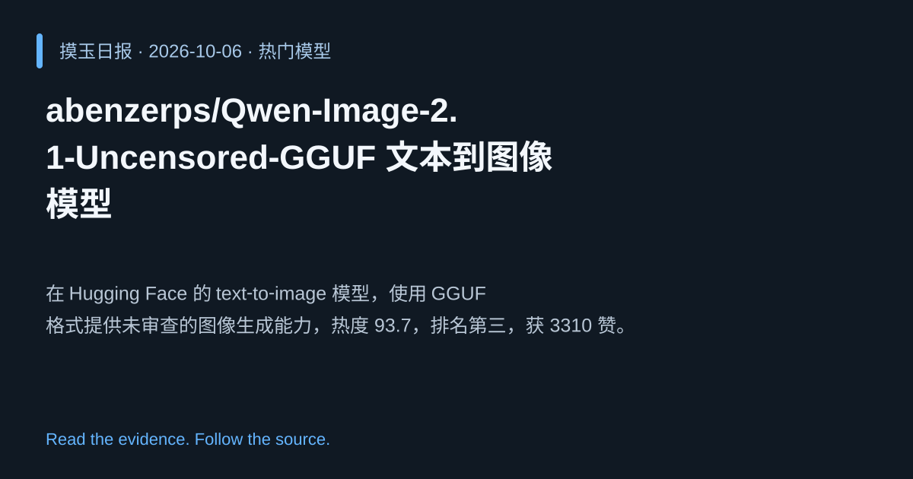

2026-10-06 · Asia/Shanghai · 热门模型 · #3
abenzerps/Qwen‑Image‑2.1‑Uncensored‑GGUF 文本到图像模型
abenzerps/Qwen-Image-2.1-Uncensored-GGUF
在 Hugging Face 的 text‑to‑image 模型，使用 GGUF 格式提供未审查的图像生成能力，热度 93.7，排名第三，获 3310 赞。
为什么值得关注
提供开放式图像生成，满足对高质量无审查图像的需求，受社区广泛关注。
- 从文本生成高分辨率图像
- Uncensored 版本，去除内容过滤
- GGUF 格式提升部署效率，热度 93.7/100

热度 93.8 / 100；排名与评分保留该期记录。